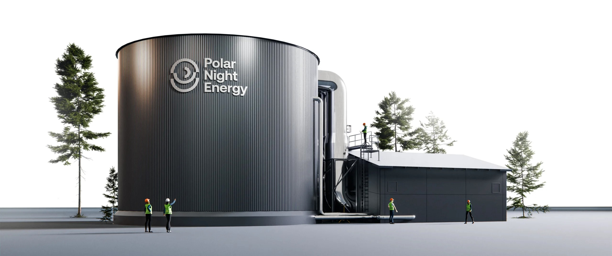

Heat as Energy Exchange Mechanism

A 2MW Sand Battery. Image courtes of Polar Night Energy.
What kind of Article is this?
This article is an early stage brainstorming/ideation.
Audience
This article is written for professionals in industrial organisations, who are responsible, formally or informally, for the purchase and use of energy.
These responsibilities may lie with different roles in different organisations.
Emerging aspects of these responsibilities may challenge and even overwhelm some of those professionals.
This article is especially aimed at them.
Problem
Nearby Industrial Sites may have different energy needs. Some may have excess of energy. Some may lack energy, due to the Grid capacity in this area.
Exchanging energy can, therefore, be not only interesting for them, but also a factor in business success and sometimes survival.
A natural channel to eschange energy would be in the form of electricity over the Grid. The Grid can be an easy channel in cases, where one Site has excess of, for example, solar energy and the other site lacks electrical energy.
The Grid, sometimes, might be unalbe or unwilling to allow that for administrative or technology reasons.
Solution
A solution for some Industrial Sites can be transformation and exchange of energy in other forms.
For example, the Finnish company Polar Night Energy produces Sand Batteries, which store energy in the form of heat.
Industrial Sites can, therefore, transform their excess energy into heat and then build a local heat exchange, which might be subject to less administrative or technology limitations.
Interested in a Conversation?
Contact us at ij@ivorjuechtern.de.
For Germany Ivor Jüchtern is a certified BAFA consultant and can facilitate a strategy subsidy.